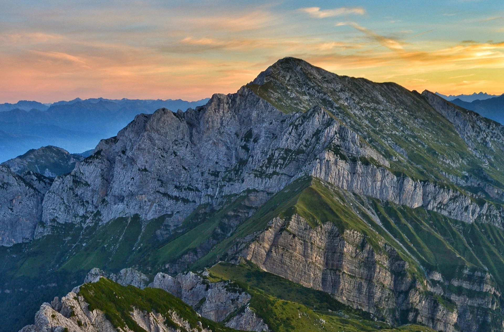
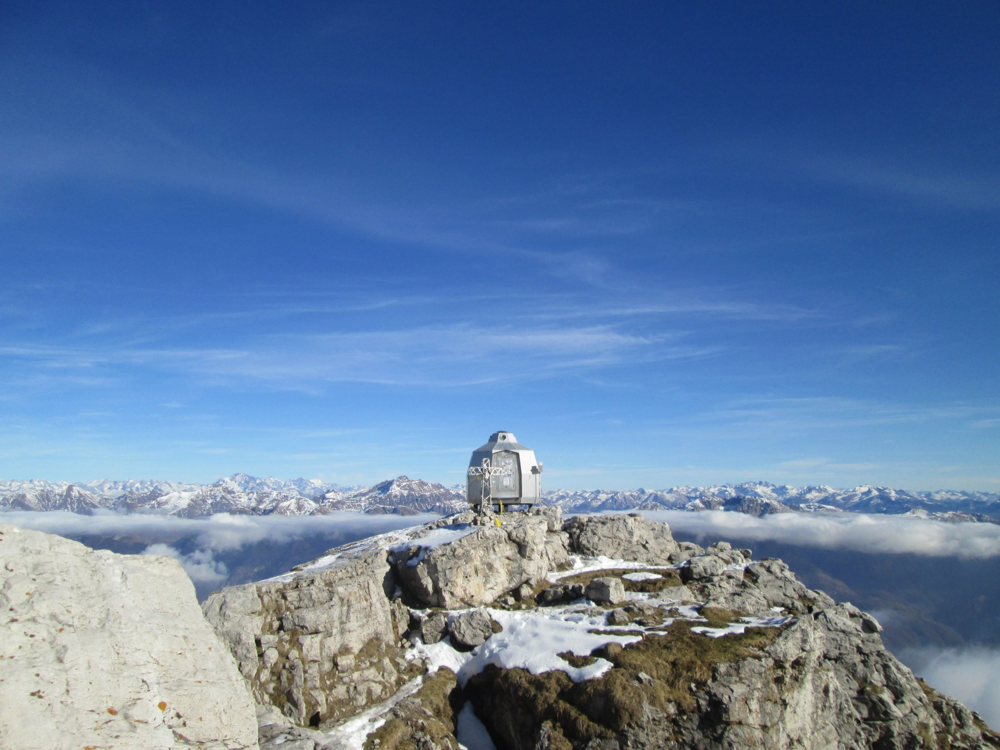

La Grigna (chiamata anche Grignone, Grigna Settentrionale o, precedentemente, monte Coden) è la vetta più alta del gruppo delle Grigne, posto in provincia di Lecco a cavallo tra il Lago di Como e la Valsassina.

La Grignetta o Grigna meridionale o Grigna di Campione è una montagna nel comune di Mandello del Lario alta 2177 m (secondo altre fonti 2184 m), facente parte del gruppo delle Grigne insieme alla più elevata Grigna o Grignone.

La splendida vista su Lecco e il lago di Como dal gruppo delle Grigne